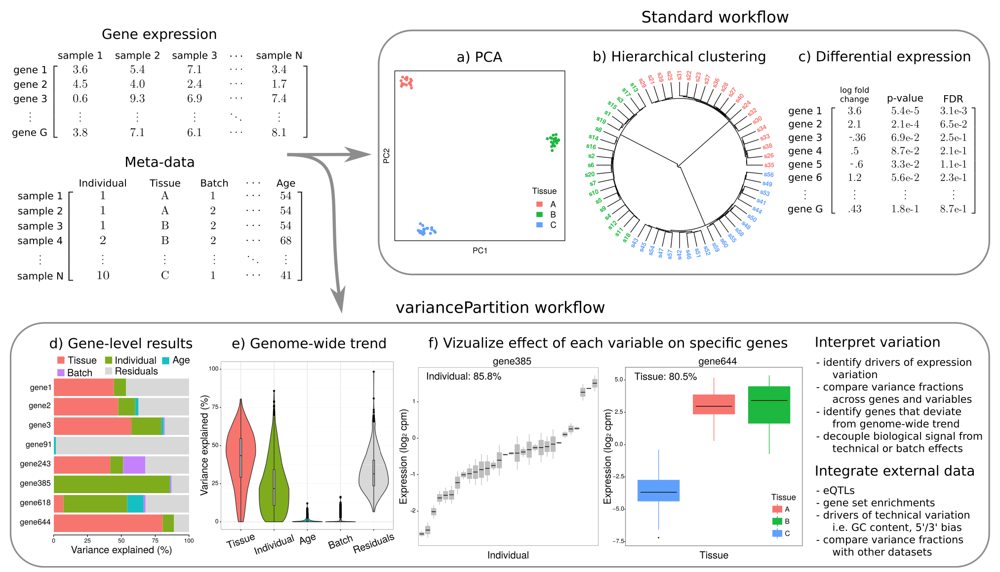

variancePartition quantifies and interprets multiple sources of biological and technical variation in gene expression experiments. The package a linear mixed model to quantify variation in gene expression attributable to individual, tissue, time point, or technical variables. The dream() function performs differential expression analysis for datasets with repeated measures or high dimensional batch effects.

Update
variancePartition 1.31.1 includes a major rewrite of the backend for better error handling. See Changelog. Importantly, the new version is compatible with emprical Bayes moderated t-statistics for linear mixed models using eBayes().
Installation
Latest features from GitHub
devtools::install_github("DiseaseNeuroGenomics/variancePartition")Stable release from Bioconductor
BiocManager::install("variancePartition")Notes
This is a developmental version. For stable release see Bioconductor version.
For questions about specifying contrasts with dream, see examples here.
See frequently asked questions.
See repo of examples from the paper.
Reporting bugs
Please help speed up bug fixes by providing a ‘minimal reproducible example’ that starts with a new R session. I recommend the reprex package to produce a GitHub-ready example that is reproducable from a fresh R session.